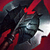
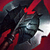

¿Necesitas saber que build le viene mejor a tu ADC? Este es tu sitio
JINX
Filo Infinito, Botas Grebas, Runaan, Sanguinaria, Lord Dominik, Cañon Fuego Rápido


Mejor Skin
| Skin |
Precio |
| Guardiana Estelar |
1820RP |
CAITLYN

Runaan, Botas Grebas, Filo Infinito, Sanguinaria, Lord Dominik, Cañon Fuego Rápido
Mejor Skin
| Skin |
Precio |
| Cazadora de Cabezas |
975RP |
LUCIAN

Youmuu, Botas Grebas, Cuchilla negra, Bailarin, Sanguinaria, Lord Dominik
 

Mejor Skin
| Skin |
Precio |
| Proyecto |
1350RP |
JHIN

Youmuu, Botas Grebas, Filo Darktharr, Filo infinito, Malmortius, Lord Dominik

Mejor Skin
| Skin |
Precio |
| Solo ante el peligro |
1350RP |